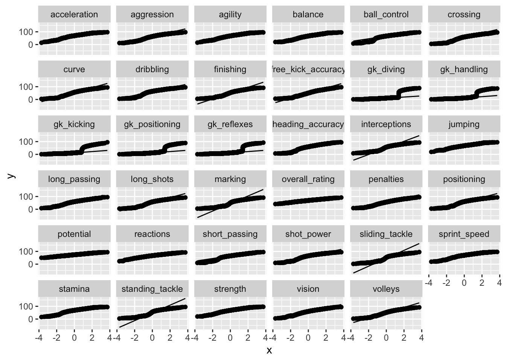
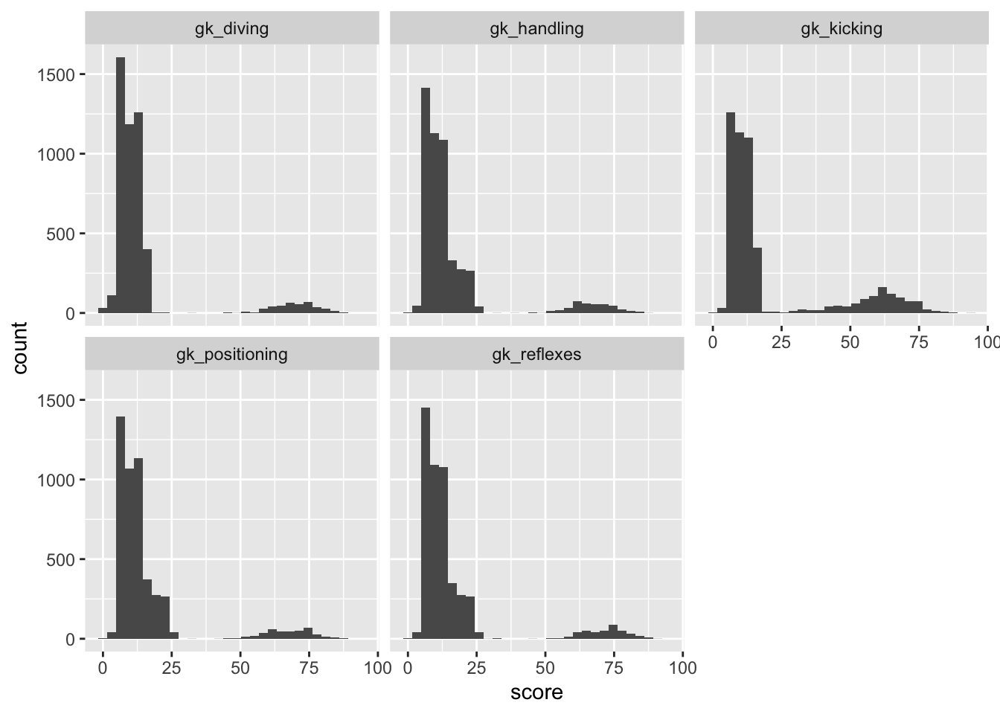
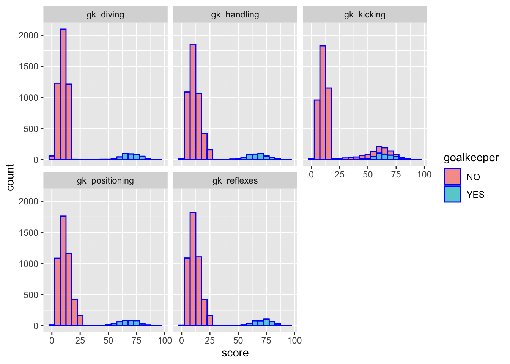
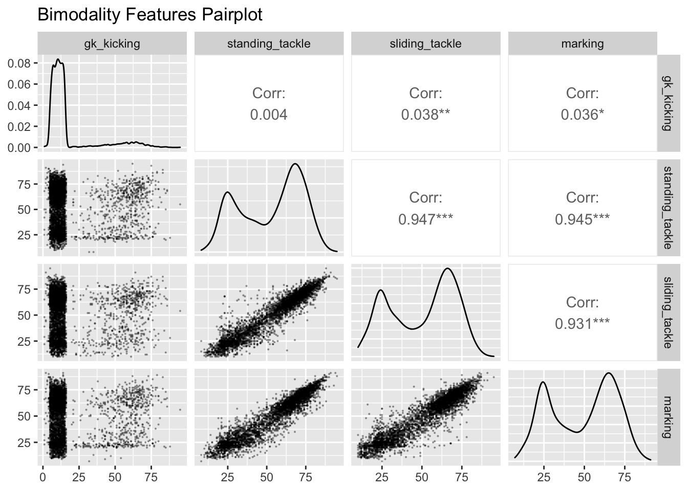
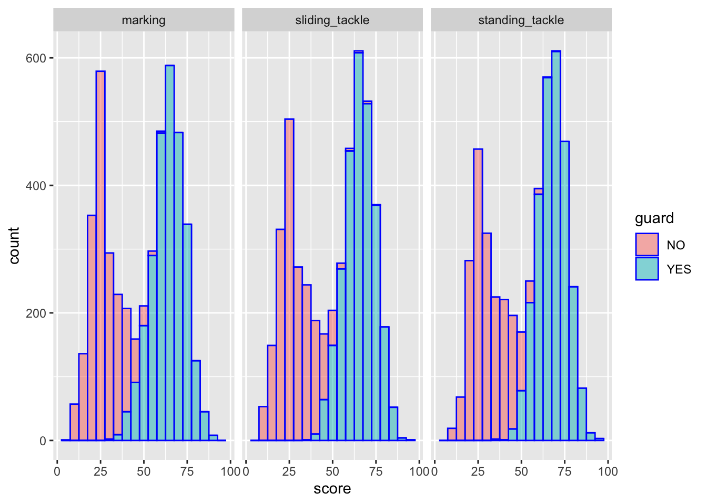
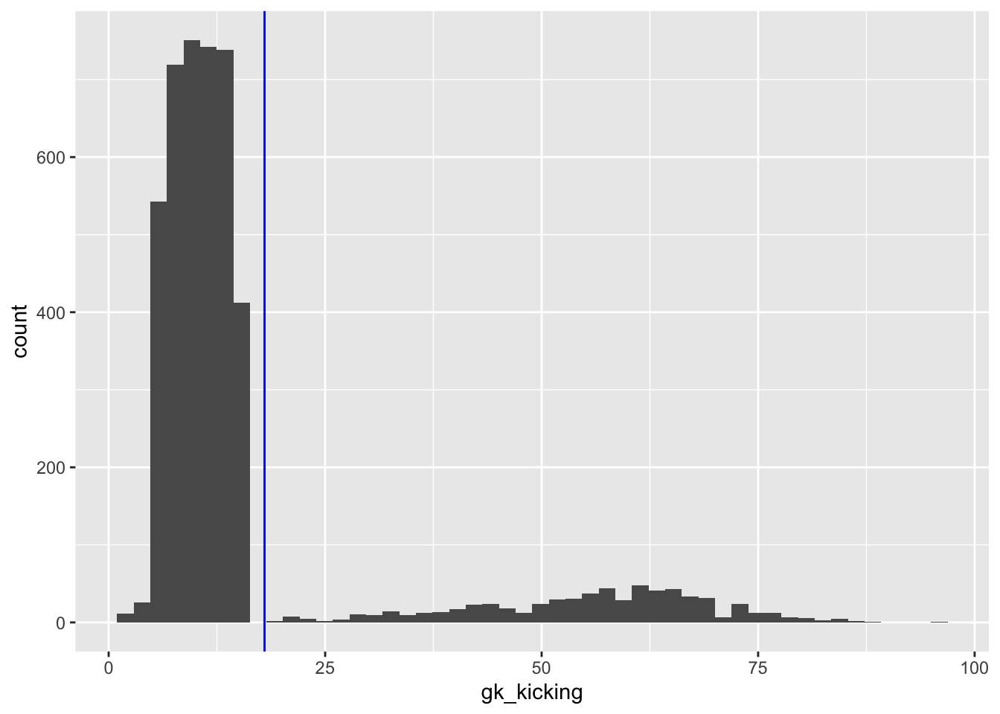
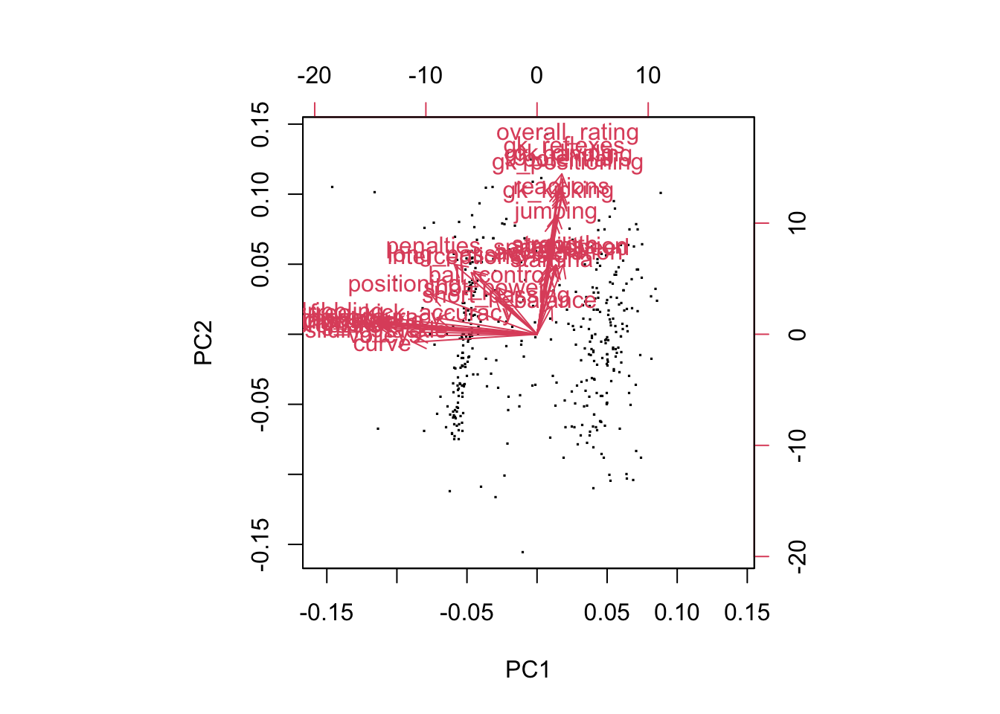
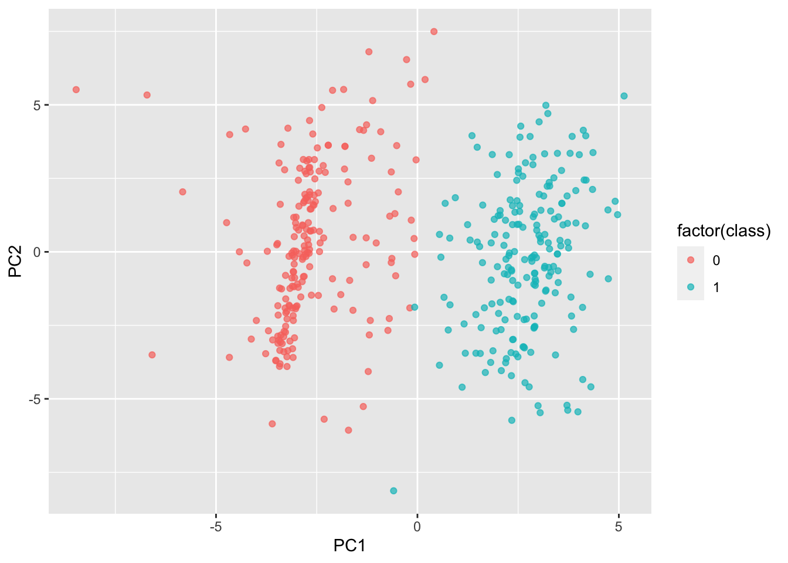
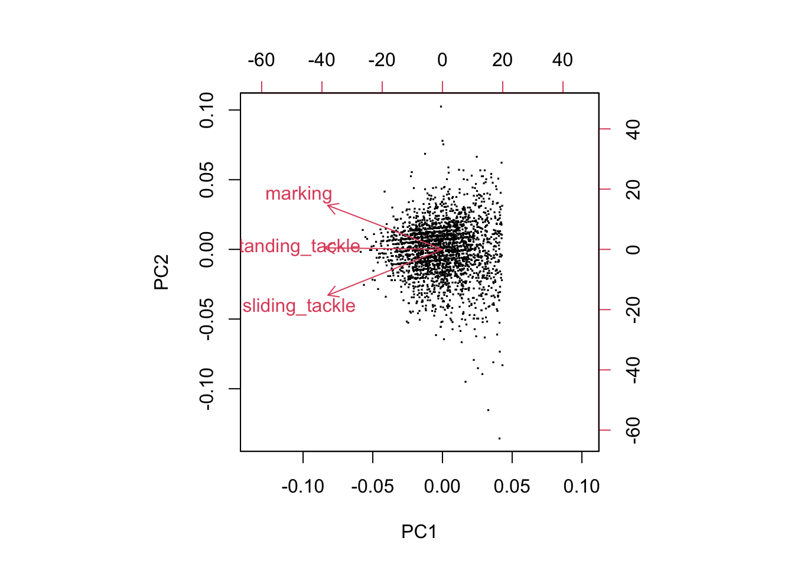

Chapter 5 Results
5.1 Player Attributes
There are 183978 players in this dataframe and only about 3000 rows contain NA values. Therefore, directly dropping NA variables is feasible. After that, we sample 5000 of them for a convenient plot.
5.1.1 Filtering goalkeepers
We firstly check the normality of each column

We firstly notice that for features starting with the characters “gk”, there is a significant deviance to normality. It is obviously because the goalkeepers are significantly better than other football players in these attributes. Since there is no information about whether one player is in charge of saving the goal. We decided to implement K-means clustering to classify them. We will not elaborate the specific ways to solve the problem since the project focuses on EDA. Before we implement this, we take a look at the histograms of “gk” features:

It is easy to notice that for these features, there are two clusters and probably the higher score is for goalkeepers and the lower score is for other players.

We notice that except gk_kicking, all clusters clearly separated the supposed goalkeepers and other players. We surmise that there are some players who are not goalkeepers playing well in kicking. The research conducted on the types of these players will be explored later.
We can verify the justification of this clustering by simply looking at the count of goalkeepers and non-goalkeepers. In one sample, we found the total number of non-goalkeepers are 4596 and goalkeepers are 404. The ratio is 11.38. Notice that there are one goalkeeper with 10 other football players in the match so the theoretical ratio should be 10, which is close to 11.38.
5.1.2 Filtering guards
We then take a look at the histograms for non-goalkeepers.
From the histograms, we notice that four attributes contain bimodality. Those are ‘gk_kicking’, ‘standing_tackle’, ‘sliding_tackle’ and ‘marking’. We then make a scatter matrices for these four data.

We realize that the last three features containing a high positive correlation. With bimodality and strong correlation, another clustering could be built. We feel that the clusters with higher score could be from the guards (or defenders).
 The clustering shows it separates guard and other players.
We can verify the justification of this clustering by simply looking at the count of guards and non-guards. In one sample, we found the total number of non-guards are 2687 and guards are 1909. The ratio is 1.41. Notice that usually the formation of the team are “4-6” like (e.g. 4-4-2, 4-2-3-1, 4-3-3) so the theoretical ratio should be 1.5, while 1.41 is close to this ratio.
## # A tibble: 2 × 2
## guard counts
## <dbl> <int>
## 1 0 1909
## 2 1 26875.1.3 gk_kicking issue
So what happend to “gk_kicking” high score non-goalkeepers? In this part, we would like to take a simple exploration. Firstly, we categorize the players based on whether the “gk_kicking” score is higher than 18. You can see why we choose 18 based on the following plot.

Then we plot the difference between two class on other features. Boxplot is used to avoid overplotting issue and increase the computing efficiency. The result is as followed:
It seems that there is no significant difference for other features. We also heard from other friends that this feature is trivial for non-goalkeepers. So we decide to discard this feature without further exploration.
5.1.4 further exploration of goalkeeper
We implemented PCA on goalkeepers’ gk features and the biplot is shown as follow:
We notice that there is high similarity between these tuples: (“gk_diving”, “gk_reflexes”) and (“gk_positioning”, “gk_handling”). That means we could create a new score from these two features in the tuple via dimension reduction.
There seems no clustering but when we make a biplot for all features, a surprising thing happens:

We see that there are two clusters of data and three clusters of features are generated. Therefore, we could apply KMeans on goalkeepers to generate two clusters.

5.1.5 further exploration of guards

5.1.6 further exploration of non-guards
5.2 team biplot
5.3 Combine
5.4 A Five-Factor Team Evaluation System
Even though each team has some team attributes associated, it is crucial to include all players’ attributes when evaluating a team. Therefore, in this section, we attempt to aggregate player attributes into a team evaluation.
We encode categorical attributes into one-hot vector and then take the averages for each of attributes across the team (due to the nature that the top players in a team is much more productive than others, we will use the top 6 players in building this system). Then, we run GBDT model for all attributes to find the relationship between attributes and the outcome (whether the team wins the match or the difference between the number of goals scored), and use SHAP value to get the the ranking of feature importance. SHAP values interpret the impact of having a certain value for a given feature in comparison to the prediction we’d make if that feature took some baseline value. See this Github repo for more information.
Following the introduced procedure, we then select the top 20 importance attributes for further analysis, which are overall_rating, potential, ball_control, dribbling, agility, sprint_speed, short_passing, long_passing, vision, crossing, volleys, curve, finishing, standing_tackle, sliding_tackle, marking, interceptions, stamina, positioning and reactions.
To build a simpler and more explainable team evaluation system, we want to reduce our 20 picked attributes to only a few variables. We can first examine the correlation between each pair of attributes to get a sense of how similar between a pair of attributes.
In a correlation heatmap, each block represents the correlation of two attributes. The darker the color, the stronger the correlation. From the above plot, we can observe some big block with similar degree of the color which reveals that those attributes share similar information and we can further more reduce them to a lower dimension. To achieve that, we first apply clustering algorithm. See this Github repo for more information.
In have a better view of the cluster, we reorder the same heatmap and highlight each cluster. The final 5 clusters can be explained as following:
Passing: long_passing, curve, short_passing, crossing. Those attributes are all about passing.
Overall: overall_rating, ball_control, potential, reactions. Overall rating and potential are types of generalization, and reactions and ball controlling are important to every situation.
Shot: vision, finishing, volleys, positioning. It is apparent that finishing is about shots and volleys is a way to shoot. Why vision and positioning are important in getting goals? Although according to the schema visions are highly-correlated with long-passing, good vision and positioning can help with achieving goals. Let’s consider about the goals after the corner kick as an example. With brilliant vision and positioning, there is higher possibility in getting goals.
Tackle: marking, sliding_tackle, standing_tackle, interceptions. These attributes are about dispossess an opponent of the ball.
Physical: dribbling, agility, sprint_speed, stamina. Agility, sprint speed and stamina are about physical quality. And dribbling is here because perfect physical quality can lead to better dribbling ability.
We can then apply dimension reduction technique to each cluster and reduce them to a 5 index evaluation system. And each index is a combination of corresponding attributes. See this Github repo for more information. The result is shown below:
Passing = 0.95 * 0.95 * long passing + 2.02 * curve + 5.50 * short passing + 1.06 * crossing
Overall = 3.54 * overall rating + 2.37 * ball control + 1.27 * potential + 1.09 * reactions
Shot = 3.89 * vision + 1.01 * finishing + 1.83 * volleys + 2.93 * positioning
Tackle = -0.70 * marking + 4.52 * sliding tackle + 1.34 * standing tackle + 5.57 * interceptions
Physical = 6.50 * dribbling + 1.11 * agility + 0.34 * sprint speed + 2.19 * stamina
Now, we can input the averages of the top 6 players in a team and learn their playing styple in the context of those 5 index, and also we can easily compare the styles and ability between teams. Playing around with the interactive plot in the next chapter to understand the system better.